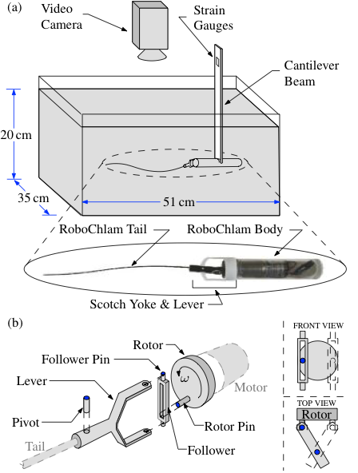
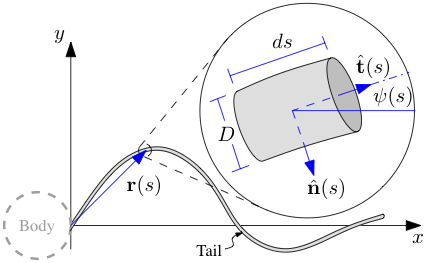
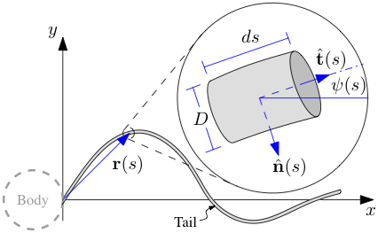

Figure: Elastic-tail swimmer
Top: Experimental setup to measure tail shapes and propulsive force of elastic tail.
Bottom: Mechanism (Scotch yoke) for generating tail oscillation from a circular motion.
Diagram of the elastic tail.
Top: Experimental setup to measure tail shapes and propulsive force of elastic tail.
Bottom: Mechanism (Scotch yoke) for generating tail oscillation from a circular motion.
Diagram of the elastic tail.